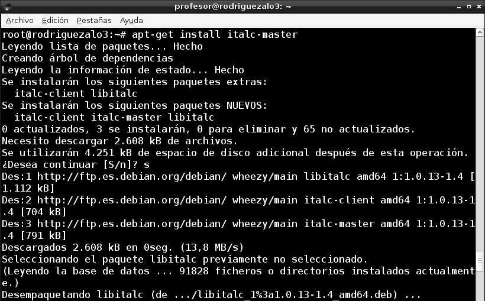
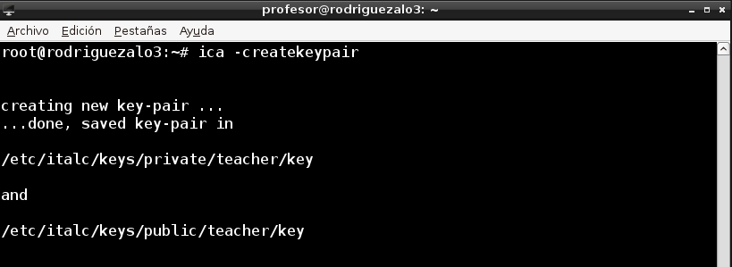
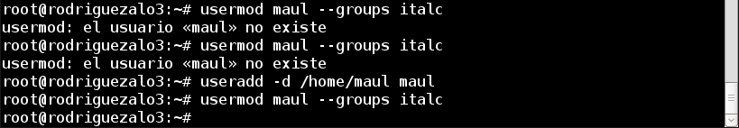
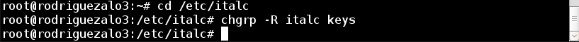
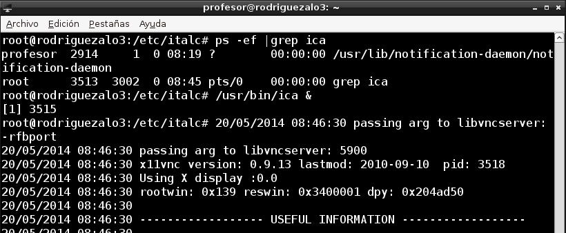

A2: Control Remoto
- Módulo: Fundamentos de Hardware
- Título del trabajo A2: Control Remoto
- Componentes del grupo: Tomás Rodríguez Alonso
- Curso Académico: 2013/2014
- Fecha de entrega: 24 de Abril de 2014
Vamos a necesitar 3 máquinas que pueden ser virtuales o reales:
MV1 italc Master (Debian)
MV2 italc Slave (Windows7)
MV3 italc Slave (Debian)
Instalar iTalc Master (Maestro) en un equipo GNU/Linux o Windows.

Para crear las claves de iTalc ejecutamos el comando "ica -createkeypair"

Creamos el grupo italc, y añadimos nuestro usuario "maul" al grupo:
1.- addgroup italc
2.- usermod maul --groups italc

Damos permisos al grupo italc, para tener acceso a las claves de italc:
cd /etc/italc; chgrp -R italc keys

Verificar que el servicio está iniciado (ps -ef |grep ica). Si el programa "ica" no está iniciado,
lo podemos iniciar manualmente. Para ello abrimos un terminal y escribimos: /usr/bin/ica &
